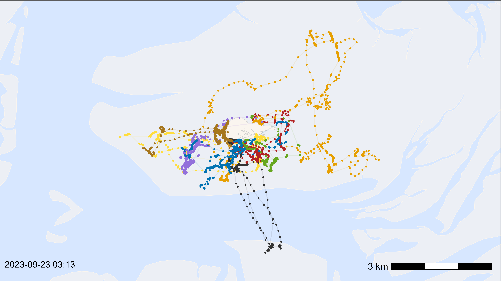
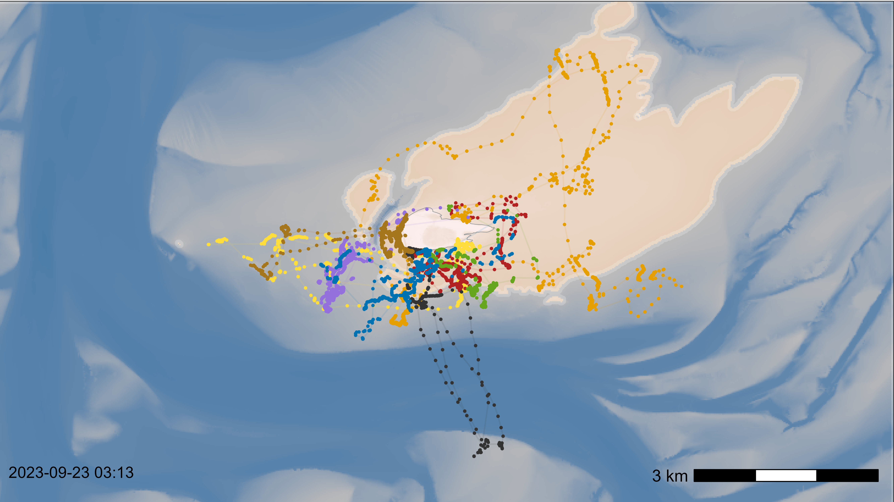

Animate data
Johannes Krietsch
Source:vignettes/visualization_tutorials/animate_data.Rmd
animate_data.RmdThis article gives a simple workflow on how to animate movement data. It works with any type of basemap and allows to adjust everything as wanted. It first shows how to animate data with a simple basemap and then how to do it with a bathymetry data basemap and the water level. The first two steps and the last are the same (load packages, prepare movement data, make animation).
Install mapmate from GitHub:
remotes::install_github("leonawicz/mapmate").
Prepare movement data
The movement data should be filtered and smoothed before (not shown here) and it makes sense to aggregate the data to a desired interval somewhat matching the time steps.
# load example data
data <- data_example
# only keep relevant rows
data <- data[, .(species, tag, time, datetime, x, y)]
# thin the data by aggregation with a 15-second interval
data <- atl_thin_data(
data = data,
interval = 15,
id_columns = c("tag", "species"),
method = "aggregate"
)Configuration of file paths and function arguments
For more details see function descriptions of the used functions. Obviously more settings can be adjusted, but this should cover the main settings.
# time steps and output path (atl_time_steps):
cfg_time_interval <- "1 min" # time interval for animation steps
cfg_output_path <- paste0(
"C:/Users/", Sys.info()[["user"]], "/temp/animation"
) # output path for png's
# size and alpha settings of the tail (atl_size_along and atl_alpha_along)
cfg_size_head <- 4 # number of positions in head
cfg_size_to <- c(0, 1.5)
cfg_size_max <- 3600 * 6 # maximal tail length in seconds
cfg_alpha_head <- 3 # number of positions in head for alpha
cfg_alpha_skew <- -1
# exclude points with large gap
cfg_max_gap <- 60 * 5 # in seconds
# define bounding box
bbox <- atl_bbox(data, buffer = 800)
# animation settings (ffmpeg via mapmate)
cfg_file_name <- "Animation.mp4"
cfg_frame_rate <- 16 # in seconds
# additional to add water data
# path to tide data
tidal_pattern_fp <- paste0(
atl_file_path("watlas_teams"), # file path to WATLAS teams data folder
"waterdata/allYears-tidalPattern-west_terschelling-UTC.csv"
)
measured_water_height_fp <- paste0(
atl_file_path("watlas_teams"), # file path to WATLAS teams data folder
"waterdata/allYears-gemeten_waterhoogte-west_terschelling-clean-UTC.csv"
)
# path to bathymetry data
bathymetry_fp <- paste0(
atl_file_path("rasters"), # file path to Birds, fish 'n chips GIS/rasters
"bathymetry/2024/bodemhoogte_20mtr_UTM31_int.tif"
)Create time steps
Create time steps with a desired interval (e.g. 1 min), define the folder path where the png’s are created, delete existing files.
# delete existing files (if any)
unlink(paste0(cfg_output_path, "/*"), recursive = TRUE)
# create time steps
ts <- atl_time_steps(
datetime_vector = data$datetime,
time_interval = cfg_time_interval,
output_path = cfg_output_path,
create_path = TRUE,
fps = cfg_frame_rate
)Simple animation of movements
Check plot
Make a basemap as desired and plot with all data to check the outcome, scalebar and time stamp. Adjust everything as desired (check with saving png in the defined size).
# create basemap
bm <- atl_create_bm(bbox)
# plot points and tracks to check
bm +
geom_path(
data = data, aes(x, y, colour = species),
linewidth = 0.5, alpha = 0.1, show.legend = FALSE
) +
geom_point(
data = data, aes(x, y, colour = species),
size = 0.5, alpha = 1, show.legend = FALSE
) +
# add color scale by species
scale_color_manual(
values = atl_spec_cols(),
labels = atl_spec_labs("multiline"),
name = ""
) +
# add time stamp
annotate(
"text",
x = -Inf, y = -Inf, hjust = -0.1, vjust = -2.4,
label = paste0(format(data[1]$datetime, "%Y-%m-%d %H:%M")), size = 4
)
Loop to create png’s for each step
Create a png for each step (check steps - that is how many png’s are
created). Run first with an example step to check
(e.g. step <- 50) outcome for one png. Depending on the
number of png’s, run first on a subset to check if everything is as
desired, once everything is fine, run for all steps. A desired color
scale can be simply added to p.
In the subset step, the maximal tail length can be chosen (here, 6
h). Then we use atl_alpha_along() to create an fading alpha
and atl_size_along() to make a comet shape - adjust
parameters as desired (see function description for more details).
Afterwards we add this path to the basemap and add the time stamp.
# register cores and backend for parallel processing
registerDoFuture()
plan(multisession)
# steps
steps <- seq_len(nrow(ts))
# loop to create pngs for each time step
foreach(i = steps) %dofuture% {
# define time step
time_step <- ts[i]$datetime # current date
# subset data
ds <- data[datetime %between% c(time_step - cfg_size_max, time_step)]
ds <- ds[datetime > time_step - cfg_max_gap] # exclude points with large gap
dsp <- setkey(setDT(ds), tag)[, .SD[which.max(datetime)], tag] # point
dsp <- dsp[datetime > time_step - cfg_max_gap] # exclude points with large gap
# create alpha and size
if (nrow(ds) > 0) {
ds[, a := atl_alpha_along(
datetime,
head = cfg_alpha_head, skew = cfg_alpha_skew
), by = tag]
}
if (nrow(ds) > 0) {
ds[, s := atl_size_along(
datetime,
head = cfg_size_head, to = cfg_size_to
), by = tag]
}
# add tracks to basemap
p <- bm +
geom_path(
data = ds, aes(x, y, color = species), alpha = ds$a, linewidth = ds$s,
lineend = "round", show.legend = FALSE
) +
# add color scale by species
scale_color_manual(
values = atl_spec_cols(),
labels = atl_spec_labs("multiline"),
name = ""
) +
# add time stamp
annotate(
"text",
x = -Inf, y = -Inf, hjust = -0.1, vjust = -2.4,
label = paste0(format(time_step, "%Y-%m-%d %H:%M")), size = 4
)
# save png
agg_png(
filename = ts[i, path],
width = 3840, height = 2160, units = "px", res = 300
)
print(p)
dev.off()
}
# close parallel workers
plan(sequential)Animation of movements with water level
Add tide and bathymetry data
We add water level data to ts to know the water level at
each step and crop the bathymetry data to the extend of the map (use
same buffer as for basemap).
# load tide data
tidal_pattern <- fread(tidal_pattern_fp)
measured_water_height <- fread(measured_water_height_fp)
# add unix time
ts[, time := as.numeric(datetime)]
# add tide data to movement data
ts <- atl_add_tidal_data(
data = ts,
tide_data = tidal_pattern,
tide_data_highres = measured_water_height,
waterdata_resolution = "10 min",
waterdata_interpolation = "10 sec",
offset = 30
)
# load bathymetry data
bat <- rast(bathymetry_fp)
# crop the raster using the bounding box
bat_c <- crop(bat, bbox)
# wrap to use in parallel loop
bat_w <- wrap(bat_c)Check plot
Make a basemap as desired and plot with all data to check the outcome, scalebar and time stamp. Adjust everything as desired (check with saving png in the defined size).
# create basemap
bm <- atl_create_bm(
bbox, raster_data = bat_c, option = "bathymetry", scalebar = FALSE
)
# extract example water level
threshold <- 0 / 100 # water level at the time (/100 to scale to m)
bat_m <- bat_c < threshold # mask below threshold (TRUE = 1)
bat_m[bat_m == 0] <- NA # remove land
waterline <- as.polygons(bat_m, values = TRUE, dissolve = TRUE) |>
st_as_sf() # extract polygon with water level
# check plot with all data
bm +
# add water level
geom_sf(
data = waterline, fill = "dodgerblue3", alpha = 0.2,
color = scales::alpha("white", 0.2), linewidth = 2
) +
# add points and tracks
geom_path(
data = data, aes(x, y, colour = species),
linewidth = 0.5, alpha = 0.1, show.legend = FALSE
) +
geom_point(
data = data, aes(x, y, colour = species),
size = 0.5, alpha = 1, show.legend = FALSE
) +
# add color scale by species
scale_color_manual(
values = atl_spec_cols(),
labels = atl_spec_labs("multiline"),
name = ""
) +
# add time stamp
annotate(
"text",
x = -Inf, y = -Inf, hjust = -0.1, vjust = -2.4,
label = paste0(format(data[1]$datetime, "%Y-%m-%d %H:%M")), size = 4
) +
# add scale bar
ggspatial::annotation_scale(
aes(location = "br"),
text_cex = 1, height = unit(0.3, "cm"),
pad_x = unit(0.4, "cm"), pad_y = unit(0.6, "cm")
) +
# set extend again (overwritten by geom_sf)
coord_sf(
xlim = c(bbox["xmin"], bbox["xmax"]),
ylim = c(bbox["ymin"], bbox["ymax"]), expand = FALSE
)
Loop to create png’s for each step
Same as above just with added water level polygon and scale bar (needs to be added above water).
# register cores and backend for parallel processing
registerDoFuture()
plan(multisession)
# steps
steps <- seq_len(nrow(ts))
# loop to create pngs for each time step
foreach(i = steps) %dofuture% {
# define time step
time_step <- ts[i]$datetime # current date
# subset data
ds <- data[datetime %between% c(time_step - cfg_size_max, time_step)]
ds <- ds[datetime > time_step - cfg_max_gap] # exclude points with large gap
dsp <- setkey(setDT(ds), tag)[, .SD[which.max(datetime)], tag] # point
dsp <- dsp[datetime > time_step - cfg_max_gap] # exclude points with large gap
# create alpha and size
if (nrow(ds) > 0) {
ds[, a := atl_alpha_along(
datetime,
head = 30, skew = -2
), by = tag]
}
if (nrow(ds) > 0) {
ds[, s := atl_size_along(
datetime,
head = 70, to = c(0.3, 2)
), by = tag]
}
# extract water level
bat_c <- unwrap(bat_w)
threshold <- ts[i]$waterlevel / 100 # water level at the time (scale to m)
bat_m <- bat_c < threshold # mask below threshold (TRUE = 1)
bat_m[bat_m == 0] <- NA # remove land
waterline <- as.polygons(bat_m, values = TRUE, dissolve = TRUE) |>
st_as_sf() # extract polygon with water level
# create basemap
bm <- atl_create_bm(
bbox, raster_data = bat_c, option = "bathymetry", shade = FALSE,
scalebar = FALSE
)
# add everything to the basemap
p <- bm +
# add water level
geom_sf(
data = waterline, fill = "dodgerblue3", alpha = 0.2,
color = scales::alpha("white", 0.2), linewidth = 2
) +
# add track
geom_path(
data = ds, aes(x, y, color = species), alpha = ds$a, linewidth = ds$s,
lineend = "round", show.legend = FALSE
) +
# add color scale by species
scale_color_manual(
values = atl_spec_cols(),
labels = atl_spec_labs("multiline"),
name = ""
) +
# add time stamp
annotate(
"text",
x = -Inf, y = -Inf, hjust = -0.1, vjust = -2.4,
label = paste0(format(time_step, "%Y-%m-%d %H:%M")), size = 4
) +
# add scale bar
ggspatial::annotation_scale(
aes(location = "br"),
text_cex = 1, height = unit(0.3, "cm"),
pad_x = unit(0.4, "cm"), pad_y = unit(0.6, "cm")
) +
# set extend again (overwritten by geom_sf)
coord_sf(
xlim = c(bbox["xmin"], bbox["xmax"]),
ylim = c(bbox["ymin"], bbox["ymax"]), expand = FALSE
)
# save png
agg_png(
filename = ts[i, path],
width = 3840, height = 2160, units = "px", res = 300
)
print(p)
dev.off()
}
# close parallel workers
plan(sequential)Monitor progress bar while files are created
We can use atl_progress_bar() to monitor the progress
while the png’s are created in the background. This can’t be done in the
same R session, since it is busy, but we can open a new additional R
session and run the code below to see the progress. In a more simple
way, we can just go in the directory and see how many png’s are created.
By running atl_time_steps() above, a file total_frames.txt
is created in the output path which contains the total number of frames
that will be created - this is read automatically by
atl_progress_bar() if total = NULL.
# set output path again in new session (same as above)
cfg_output_path <- paste0(
"C:/Users/", Sys.info()[["user"]], "/temp/animation"
) # output path for png's
# check progress
atl_progress_bar(
file_path = cfg_output_path,
total = NULL, refresh_rate = 1
)Make a animation using ffmpeg via
mapmate
Adjust the frame rate (rate) as desired (depending on
the time step interval). File is created in the same path, but this can
also be changed as desired.
# make animation
ffmpeg(
dir = cfg_output_path, output_dir = cfg_output_path,
pattern = atl_ffmpeg_pattern(ts[1]$path),
output = cfg_file_name, rate = cfg_frame_rate,
details = TRUE, overwrite = TRUE
)